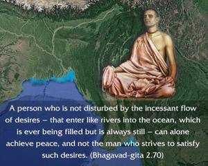
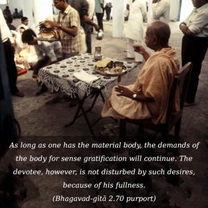
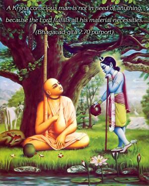

A person who is not disturbed by the incessant flow of desires – that enter like rivers into the ocean, which is ever being filled but is always still – can alone achieve peace, and not the man who strives to satisfy such desires.



Although the vast ocean is always filled with water, it is always, especially during the rainy season, being filled with much more water. But the ocean remains the same – steady; it is not agitated, nor does it cross beyond the limit of its brink. That is also true of a person fixed in Kṛṣṇa consciousness. As long as one has the material body, the demands of the body for sense gratification will continue. The devotee, however, is not disturbed by such desires, because of his fullness. A Kṛṣṇa conscious man is not in need of anything, because the Lord fulfills all his material necessities. Therefore he is like the ocean – always full in himself. Desires may come to him like the waters of the rivers that flow into the ocean, but he is steady in his activities, and he is not even slightly disturbed by desires for sense gratification. That is the proof of a Kṛṣṇa conscious man – one who has lost all inclinations for material sense gratification, although the desires are present. Because he remains satisfied in the transcendental loving service of the Lord, he can remain steady, like the ocean, and therefore enjoy full peace. Others, however, who want to fulfill desires even up to the limit of liberation, what to speak of material success, never attain peace. The fruitive workers, the salvationists, and also the yogīs who are after mystic powers are all unhappy because of unfulfilled desires. But the person in Kṛṣṇa consciousness is happy in the service of the Lord, and he has no desires to be fulfilled. In fact, he does not even desire liberation from the so-called material bondage. The devotees of Kṛṣṇa have no material desires, and therefore they are in perfect peace.